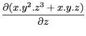

Pour dériver une fois :
diff (ou derive) a deux arguments : une expression
et une variable (resp une liste contenant le nom des variables)
(voir fonctions de plusieurs variables paragraphe 6.51).
diff renvoie la dérivée de l'expression par rapport à la variable
donnée comme deuxième paramètre, trés utile pour calculer des
dérivées partielles!) (resp renvoie une liste contenant les dérivées
par rapport aux variables de l'argument ).
Exemples :
Soit à calculer :

On tape :
diff(x*y ^2*z^3+x*y*z,z)
On obtient :
x*y^2*3*z^2+x*y
Soit à calculer les 3 derivées partielles premières de
x*y2*z3 + x*y*z.
On tape :